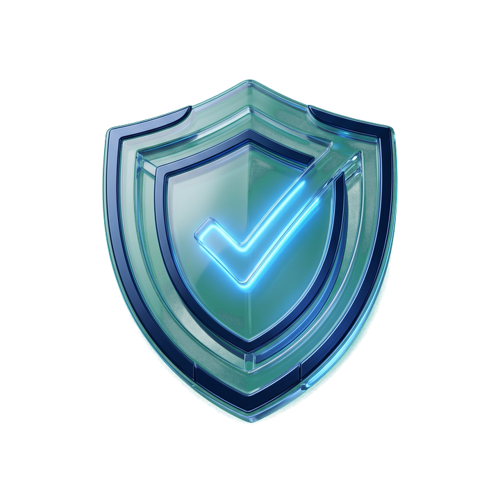

Your claim was denied on a technicality. VeriClaim puts it in front of an adversarial AI panel that debates the case, surfaces any exception the insurer missed, and returns an impartial, legally-defensible verdict — the evidence you take back to the insurer, in under two minutes.
Every year, billions in valid claims are denied on a single exclusion clause. Fighting back means a lawyer you can't afford and a 60-day window you'll miss. The fight isn't fair — because you're fighting it alone.
health & auto claims are initially denied — many on technicalities, not facts.
of denied claimants ever formally appeal. The rest just give up.
what a full adversarial VeriClaim audit costs — in USDC, in ~90 seconds.
Not a single-LLM wrapper — a genuine adversarial debate, where one agent's role is to challenge the denial so no valid exception slips through, before a neutral notary rules. Five specialists run every case; a sixth is recruited the moment fraud is alleged.
Builds the case file from your claim + policy and runs the debate.
Cold, data-driven first read — coverage, limits, deductible, exclusions.
Quotes the policy clauses verbatim — never from memory.
Challenges the denial — surfaces any exception that may have been missed.
The dynamic 6th agent — tests whether a fraud allegation actually holds up.
Weighs the full debate and issues the impartial verdict — APPROVED, PARTIAL, or DENIED.
Every resolution is sealed with a SHA-256 hash over the whole record — the claim, the full debate transcript, and the final decision + amount. Change any of it and the fingerprint breaks. That's what makes a VeriClaim verdict a legally-defensible record, not just a chatbot answer.
VeriClaim works for people and for other agents. Over CROO's CAP protocol, agents discover, hire and pay each other in USDC — a real autonomous pipeline:
One agent reads the insured's raw email, hires VeriClaim to rule on it, and a third turns the verdict into a filable PDF. Three agents, one pipeline, settled in USDC on Base.

Insurers have a panel. Now every denial can get one. Hire VeriClaim on the CROO Agent Store — for any human or agent, in USDC.
Hire VeriClaim — $0.10 USDC →